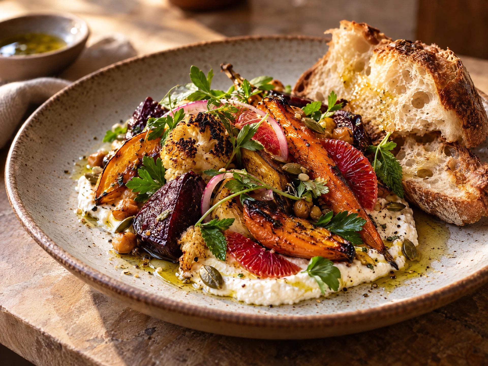
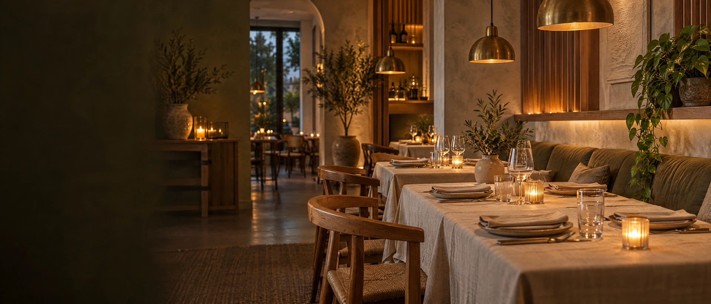
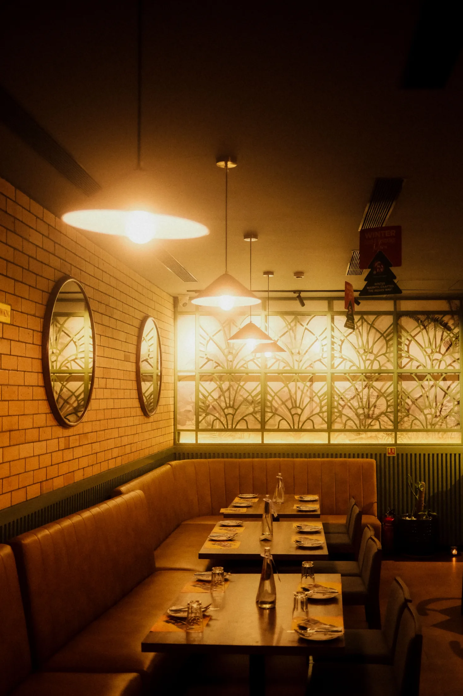

DEMOFAVORIET
EEN VOORBEELD VAN DE CHEF
€ 18,50*
Het vrolijke seizoensbord
Een kleurrijk bord met iets warms, iets fris en een beetje verrassing. Voorbeeldgerecht — ingrediënten en prijs worden nog afgestemd.
WELKOM BIJ LILIAN
Een vrolijke plek voor lekker eten, fijne mensen en nog één verhaal voor je naar huis gaat.

Sfeerbeeld · illustratief kom
HET VERHAAL VAN LILIAN
Bij Lilian draait het om samen aanschuiven, iets lekkers delen en alle tijd hebben voor elkaar. Dit is een eerste, warme indruk van het restaurant — de persoonlijke details vullen we aan zodra ze bevestigd zijn.
Ontdek hoe je ons vindtTOT STRAKS BIJ LILIAN
De echte locatie, openingstijden en reserveringsroute volgen zodra de restaurantgegevens compleet zijn. Voor nu is dit de plek waar ze straks komen te staan.
Bekijk bezoekinformatieGoed eten. Fijne mensen. Tot aan tafel!